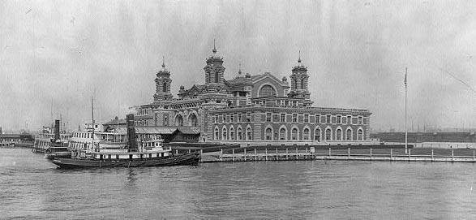

| Name | Residence | Arrival Year | Age at Arrival |
Approximate Birth Year |
| Abram Tunik | Tjirmew, Russia | 1913 | 22 | 1891 |
| Abram Tunik | Stolpe, Russia | 1913 | 25 | 1888 |
| Aran Mowseke Tunik | Igunien, Russia | 1913 | 19 | 1894 |
| Baris Tunnik | Stobcy | 1900 | 20 | 1880 |
| Barnet Tunik | Stipstz, Russia | 1913 | 35 | 1878 |
| Baruch Tunik | Stebsk | 1898 | 24 | 1874 |
| Basche Tunik | Minsk, Russia | 1910 | 20 | 1890 |
| Beatrice Tunick | New York City | 1924 | 37 | 1887 |
| Berl Tunik | Stolbsy | 1900 | 19 | 1881 |
| Berl Tunik | Staulz | 1906 | 27 | 1879 |
| Bessie Tunick | Minsk, Poland | 1920 | 32 | 1888 |
| Burnich Tunik | Atepec, Russia | 1913 | 22 | 1891 |
| Chaje Tunik | Wilno | 1893 | 24 | 1869 |
| Chasche Tunik | Stelpki, Russia | 1913 | 6 | 1907 |
| Chaskel Tunik B . | Aires, Argentina | 1922 | 41 | 1881 |
| David Tunnik | Stobcy | 1900 | 20 | 1880 |
| Eajel Tunik | 1921 | 22 | 1899 | |
| Edwin Tunick | New York City | 1924 | 8 | 1916 |
| Elias Tunik | 1895 | 15 | 1880 | |
| Ells Tunek | Stolbtze | 1904 | 19 | 1885 |
| Enci Tunik | 1895 | 20 | 1875 | |
| Eschke Tunik | Minsk | 1893 | 20 | 1873 |
| Esra Tunik | Welki, Russia | 1913 | 20 | 1893 |
| Feiga Tunik | Stolpec, Poland | 1921 | 43 | 1878 |
| Feiga Tunik | 1921 | 60 | 1861 | |
| Feigi Tunik | Stolbtzi, Russia | 1906 | 18 | 1888 |
| Francyska Tunik | Malowice | 1904 | 17 | 1887 |
| Gdalie Tunik | Holpej | 1902 | 3 | 1899 |
| Gittel Tunik | Holpej | 1902 | 17 | 1885 |
| Golde Tunick | Minsk | 1893 | 35 | 1858 |
| Harry Tunik | 1921 | 6 | 1915 | |
| Hesse Tunik | Minsk, Russia | 1910 | 9 | 1901 |
| Isak Tuniak | Stolpsi | 1905 | 15 | 1879 |
| Isaak Tunick | Konigsberg | 1899 | 56 | 1843 |
| Isidor Tunick | New York | 1922 | 42 | 1880 |
| Israel Tunik | Mir | 1900 | 18 | 1882 |
| Israel Tunik | Berezin | 1906 | 22 | 1884 |
| Israil Tunick | Minsk | 1893 | 12 | 1881 |
| Israil Tunick | 1895 | 34 | 1861 | |
| Istvan Tunick | Sarospatak, Hungary | 1911 | 38 | 1873 |
| Istvan Tunick | Sarospatak, Hungary | 1911 | 14 | 1897 |
| Itke Tunick | Stolbtz | 1901 | 36 | 1865 |
| Itrik Tunik | Trgovec, Russia | 1913 | 22 | 1891 |
| Jacob Tunik | Lischi, Russia | 1911 | 30 | 1881 |
| Jacob Tunik | 1911 | 30 | 1881 | |
| Jacow Tunik | Skolak, Russia | 1914 | 32 | 1882 |
| Jankel Tunik | ...okegStobeg | 1900 | 17 | 1883 |
| Jankel Tunik | Berezni, Russia | 1910 | 17 | 1893 |
| Jankiel Tunik | Stolpec, Poland | 1921 | 13 | 1908 |
| Kati Tunnik | Stobcy | 1900 | 15 | 1885 |
| Kune Tunik | Holpej | 1902 | 40 | 1862 |
| Leibe Tunik | Russia | 1907 | 20 | 1887 |
| Leibe Tunik | Minsk, Russia | 1910 | 9 | 1901 |
| Lejba Tunik | Stolpec, Poland | 1921 | 16 | 1905 |
| Lese Tunik | Holpej | 1902 | 7 | 1895 |
| Liebe Tunik | Stelpki, Russia | 1913 | 4 | 1909 |
| Meyer Tunik | Luczny, Russia | 1910 | 19 | 1891 |
| Moische Tunik | Stepse | 1900 | 36 | 1864 |
| Mordche Tunik | 1905 | 28 | 1877 | |
| Morduch Tunik | Igumen, Russia | 1905 | 20 | 1885 |
| Moses Tunick | Paris | 1897 | 37 | 1860 |
| Motte Tunik | Stolzi | 1904 | 29 | 1875 |
| Nechame Tunik | Minsk, Russia | 1909 | 18 | 1891 |
| Norduch Tunik | 1896 | 27 | 1869 | |
| Olga Tunick | New York | 1913 | 22 | 1891 |
| Olga Tunik | Kelmy, Kowno | 1908 | 20 | 1888 |
| Peshke Tunick | Konigsberg | 1899 | 52 | 1847 |
| Pessi Tunick | Stepitz, Russia | 1914 | 17 | 1897 |
| Petronclla Tunik | ...alandze | 1904 | 19 | 1885 |
| Pinchus Tunik | Stolbcy, Russia | 1913 | 25 | 1888 |
| Pusie Tunik | Szepc | 1901 | 16 | 1885 |
| Rachel Tunik | Stelpki, Russia | 1913 | 24 | 1889 |
| Rebeca Tunik B . | Aires, Argentina | 1922 | 7 | 1915 |
| Rifke Tunik | Stebtz, Russia | 1913 | 17 | 1896 |
| Rose Tunik | Minsk, Russia | 1910 | 39 | 1871 |
| Roseta Tunick | Stolbtz | 1901 | 3 | 1898 |
| Sahary Tunik | Czerewicze, Russia | 1912 | 24 | 1888 |
| Sam Tunick | London | 1897 | 26 | 1871 |
| Samuel Tunik | Minsk, Russia | 1910 | 4 | 1906 |
| Sarah Tunick | Minsk, Poland | 1920 | 8 | 1912 |
| Schlome Tunik | Stepse | 1900 | 17 | 1883 |
| Schneier Tunick | Stolbtz | 1901 | 9 | 1892 |
| Sejna Rywa Tunik | Stolpec, Poland | 1921 | 21 | 1900 |
| Selda Tunik B . | Aires, Argentina | 1922 | 40 | 1882 |
| Srul Tunik | Nieswiez, Poland | 1921 | 66 | 1855 |
| Taube Tunik | Slutzk, Russia | 1913 | 17 | 1896 |
| Vscher Tunik | Holpej | 1902 | 9 | 1893 |
| Welwel Tunik | Holpej | 1902 | 14 | 1888 |
| Welwel Tunik | Stolpec, Poland | 1921 | 7 | 1914 |
| Wikenty Tunik | Lubiz, Russia | 1914 | 27 | 1887 |
| Zolman Tunik | Stolpec, Poland | 1921 | 11 | 1910 |